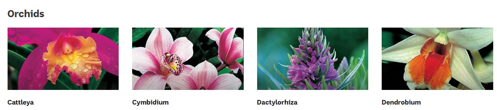

There are 30,000 orchid species in the world and 70,000 hybrids5. For those of us who are interested in orchids and yet a bit time poor it can be very tricky to try to identify a beautiful unlabelled or wild orchid you come across, in the hope of obtaining one to grow. It often happens that there are no identifying marks or labels and you must make a guess as to what species you are seeing.
Why not ask another enthusiast? Well, some people like to join orchid clubs, but that is a time commitment I cannot and don’t want to make. I want more information and less socialisation from my orchid growing hobby. And I am not alone. With their generation’s marked interest in wellness, Millennials really love plants, with some dropping up to $200 on rare plant varieties6. Plants are like this generation’s pets, and so instagrammable.
Hence, my project idea is for an orchid identifier app. This will enable the user to quickly and easily identify a beautiful orchid from a photo they snap, or featured they input, or a photo they have saved, being scanned and compared with an expansive orchid database. Using the key forms and the colours of the petals, the app will return a shortlist of likely species with associated photographs and species’ details. The app will have registered members and a simple, limited, additional social media capacity where users can upload their orchid photos, follow other users and be followed, like other users’ photos and more (detailed below). However, the main motivation for joining will be the unique capacity of the app to name the orchid you have photographed.
The orchid identifier portion of the app will have two methods of input:
1) Find My Orchid – by Photo: It will have an image recognition algorithm built into it (like CamFind - see required Software and Hardware) 7 so that it can read and analyse photos. The user will then take a photo or use one from their smartphone’s photo library and submit to the app for analysis.
2) Find My Orchid – by Type: The user will select an orchid subtype by selecting from a simple outline drawing and name. Example image below has been adapted from Gardening Australia’s Plant Finder8. Different orchid types have quite distinct forms and shapes. The user will then be presented with a line drawing of that form and a palette with “paint colours” they can select from and “pour into the segments of the orchid on the line drawing (like Microsoft Windows Paint). When they are satisfied that they have “coloured in” the orchid as closely as they can to their specimen, they submit to the app for analysis.

Sample Orchid subtypes panel image sourced from Gardening Australia website see References page point 8
How does the Orchid Finder analyse the image?
The technical method for analysis will be discussed in the required software and hardware section. However, in short, the orchid identifier will compare the input with its extensive database of labelled orchid images and return a shortlist of images and species names for the user to select from. When the user selects one species, they click and further details on that species will be revealed, including links to any retailers who will pay a fee to be plugged in to the site.
The orchid identifier app will also attempt to build an online orchid enthusiast community through several social media type features.
My Orchid Finds:
The Orchid Identifier App will also have a social component where users can upload orchids they grow or find. They can choose to GPS mark the location of the orchid they have photographed. They can add a description of their “orchid adventure” whether it be a wild one they have found, the country, terrain and microclimate, or the travails of their orchid growing challenges. All users should be able to mark their images private or public. They may wish to keep certain finds to themselves and use the app as their personal record. All users should be able to follow other users by choice and upvote their photos.
Orchid Illness Forum:
Part of the social media aspect will be an illness forum where users can submit images of pests or disease on their orchids and ask for advice. Users who contribute answers will be ranked Contributor, Expert and Guru (Guru being the highest rank) as they contribute answers which are endorsed by the community.
Content from the Orchid Identifier app will be protected and not shareable to other broadscale social media sites such as facebook or Instagram. Orchid growers and enthusiasts jealously guard their collections and their intellectual property such as photography and so users should undergo a vetting process to join the app community.
The Orchid Identifier app will require the following Software components:
1. A sophisticated image recognition and analysis application component; something like CamFind as discussed in NetGuru’s article “Top Image recognition apps to Watch in 2019” by Grzegorz Mrukwa7.
2. Access to an extensive database of orchid images. Currently the most famous example of this would be Jay Phalin’s Orchid Species Photo Encyclopedia http://www.orchidspecies.com/indexde.htm.
Jay is an incredibly knowledgable and travelled orchid expert, collecting images of orchids on his adventures all over the world. The images on his very old fashioned website are all copyright to him and captured by him. His dataset is incredible but his web development skills are very archaic and so these photos are not represented in their best light. He is also incredibly (and understandably) protective of his suite of rare orchid images. Gaining his co-operation would probably be essential, and may prove very challenging (his website is full of warnings that he will prosecute parties who use his images). However, perhaps the correct bait for Jay would be to offer him part ownership of the app, and as a part of that, access to the GPS Marks users provide when they find a wild orchid. This, of course would need to be part of the terms and conditions of user signup.
3. Appropriate app development software such as AppyPie or AppSheet. These two app development tools were ranked number one and two for small to medium businesses in April 2020 by Software Testing Help.9
Hardware:
Use of the app would of course require access to Android or iPhone hardware.
The ideal outcome of the creation and uptake of the Orchid Identifier app would be that: